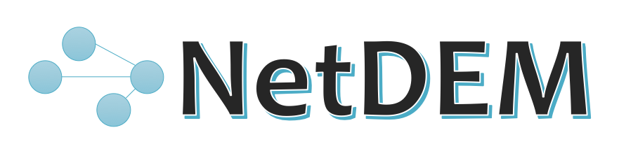

A neural network machine learning enabled DEM framework for computational particle mechanics.
What is NetDEM
This project explores and developes the machine learning (neural networks typically) enabled discrete element method (NetDEM) for the computational mechanics of irregular-shaped particles. The conventional DEM encompasses four main steps in one typical calculation cycle, namely, (1) the detection and resolution of contacts, (2) the evaluation of contact behavior, (3) the calculation of particle motion, and (4) the updating of particle geometric descriptions. NetDEM exploits the inference ability of neural networks at two levels: level 1, which is to take particle geometric descriptors as inputs and output the contact status and contact geometric features; level 2, which is to take particle geometric descriptors as inputs and directly output the particle accelerations.
Features of NetDEM
As of release v0.1, this project is aimed at providing peer researchers a basic DEM framework and collection of APIs, which can be used to develop new contact models, irregular-shaped particle models, contact detection and resolution algorithms, and etc. This release puts an emphasis on but not limited to:
- Model irregular-shaped particles, such as ellipsoid, polybezier, polyhedron.
- Develop new contact models and particle models, as well as contact detection and resolution algorithms.
- Perform unit tests, including random packing, triaxial shear, direct shear, angle of repose, etc.
- Explore the possibilities and integration of machine learning methods in DEM.
We have a plan to implement the input functionality as well as the python interfaces, so that this project can be used by a broader community and for more general purposes.
License
NetDEM is distributed under the BSD 3-Clause license, see copyright and license for details.